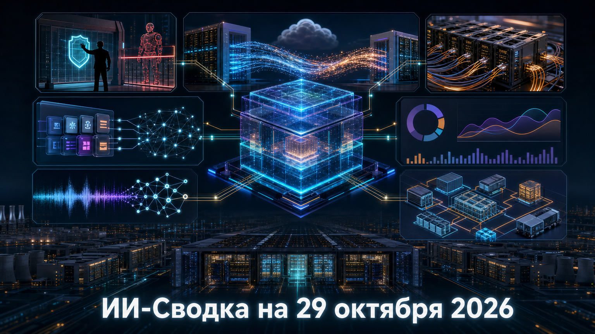

Новая повестка показывает, что рынок ИИ всё отчётливее делится на несколько взаимосвязанных слоёв: облачную экономику, агентные интерфейсы, корпоративный контроль расходов и безопасность цепочек поставщиков. Крупные компании одновременно ищут способы монетизировать генеративный поиск, расширяют доступ агентов к приложениям и строят всё более капиталоёмкую инфраструктуру для моделей.
Главный практический вывод для бизнеса: внедрение ИИ перестаёт быть вопросом выбора одной модели. Всё важнее становятся интеграции, границы доступа, измерение отдачи и финансовая устойчивость вычислительных мощностей.
Microsoft сообщила в регуляторном раскрытии, что за квартал, завершившийся 30 сентября, получила $10 млрд выручки от коммерческих соглашений с OpenAI. По данным TechCrunch, сумма включает платежи по механизму разделения выручки; за 2026 финансовый год показатель составил $24,1 млрд.
Это редкая количественная иллюстрация масштаба взаимозависимости облачного провайдера и frontier-лаборатории. При этом структура квартальных $10 млрд публично не разделена между потреблением Azure, revenue sharing и другими соглашениями, поэтому делать выводы о точной экономике каждой части партнёрства пока нельзя.
Стартап Cathedral заявил, что его автономные агенты нашли путь к ограниченному набору HR-, sales- и IT-систем Anthropic через слабости стороннего корпоративного программного обеспечения. Как пишет TechRadar, Anthropic подтвердила, что были затронуты некоторые контактные и базовые учётные данные клиентов и партнёров, а доступ отключили в тот же день.
Исходный код и веса моделей, по приведённому заявлению Anthropic, не были доступны. Сюжет важен не столько заявленной скоростью агентов, сколько практическим напоминанием: корпоративная защита агента зависит от всей цепочки подключённых сервисов, а не только от защиты самой модели.
Google объявила о международном расширении рекламы в AI Mode и AI Overviews. В США компания также готовит multi-turn ads — объявления, которые могут появляться в многошаговом диалоге с ИИ-поиском, сообщает TechCrunch.
Это переход от экспериментов с генеративной выдачей к её системной монетизации. Google заявляет, что товарные рекламные листинги в AI Mode показывают сопоставимые с органическими листингами показатели переходов, но точный список новых стран и сроки развёртывания в доступном материале не раскрыты. Для издателей, брендов и SEO-рынка это означает дальнейшую перестройку экономики поискового трафика.
AMD сообщила о расширении многолетнего партнёрства с Meta: rack-scale-системы Helios уже установлены у компании и проходят тестирование перед более широким развёртыванием. Согласно релизу AMD, в инфраструктуре Meta используются EPYC, Instinct GPU, Pensando и ROCm; компании также работают над развёртываниями гигававаттного масштаба.
Meta была названа ранним заказчиком, участвующим в определении архитектуры Instinct MI450, а AMD заявила о намерении инвестировать $1 млрд в размещение акций партнёра. Конкретные объёмы закупок, сроки массового ввода и коммерческие условия не раскрыты, однако соглашение показывает, что AMD стремится закрепиться у гиперскейлеров не отдельными ускорителями, а полным стеком вычислений, сети и ПО.
Anthropic представила корпоративные инструменты отчётности для Claude, которые должны связывать token spend с работой команд, объёмом результата, стоимостью и проблемными местами в workflow. По информации TechCrunch, продукт также предлагает рекомендации и вводит общие групповые бюджеты для управления расходами.
Для корпоративного рынка это важный сдвиг: поставщики моделей начинают продавать не только доступ к ИИ, но и средства контроля его экономической эффективности. Anthropic заявляет, что по умолчанию не использует эти данные для обучения моделей; доступность по тарифам, регионам и типам аккаунтов в публикации не уточняется.
Google представила Connected Apps Platform: разработчики из США в beta-режиме могут подключать свои приложения к Gemini, Google Search или обоим продуктам. Как сообщает TechCrunch, интеграции могут использовать облачный MCP-сервер либо Android MCP через AppFunctions APIs.
Платформа создаёт новый канал дистрибуции сервисов в агентных интерфейсах поиска и ассистента. В Gemini уже доступно более 50 Connected Apps, а расширение на Search ожидается в ближайшие недели. Пока это ограниченный preview для американских разработчиков, но направление важно для сервисов, которые хотят стать вызываемыми инструментами агента, а не только сайтами в поисковой выдаче.
NVIDIA представила Nemotron 3.5 Transcribe — открытую модель распознавания речи для 40 языков — и обновлённый speech-датасет Granary v2. По данным TechCrunch, 30B-модель рассчитана на работу с записями длительностью до часа, распознавание до восьми спикеров и может запускаться на одном ускорителе, включая устройства Jetson AGX Thor и DGX Spark.
Релиз усиливает конкуренцию в speech AI, особенно для компаний, которым нужен локальный или edge-инференс для записей встреч, контакт-центров и робототехнических сценариев. Заявления о качестве и сравнении с конкурентами исходят от NVIDIA, а модель, согласно публикации, рассчитана на записанное аудио, а не на потоковые трансляции.
Broadcom объявила схему финансирования на $63 млрд, которая должна обеспечить Anthropic доступ к XPU-ускорителям Broadcom и сетевой инфраструктуре. Как сообщает Associated Press, сделка стала заметным драйвером роста акций Broadcom после объявления.
По данным деловых источников, финансирование предполагает структуру со специальной компанией, приобретающей оборудование для последующей аренды Anthropic. Это показывает, что финансирование ИИ-вычислений всё чаще принимает форму сложных лизинговых и проектных конструкций, а не обычной закупки серверов. Детали договоров, сроки поставок и фактические объёмы развёртывания публично пока ограничены.
*Meta и ее сервисы - в России запрещены